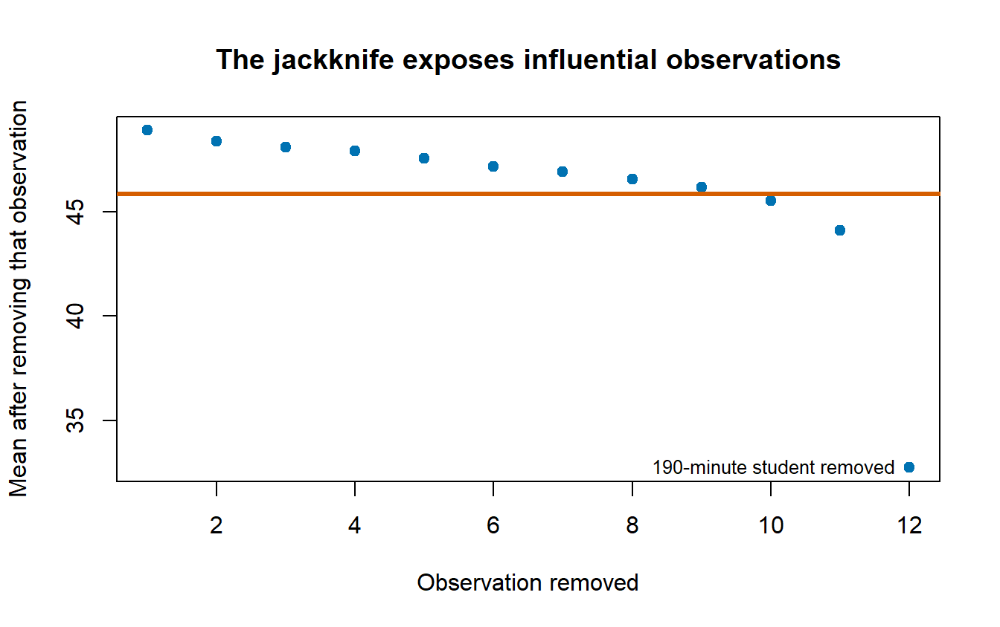

36Advanced: Bootstrapping, the Jackknife, and Resampling
36.1 Before the Bootstrap: Why We Needed Resampling
Many familiar statistics come with a theoretical sampling distribution. If the assumptions behave, we can use that distribution to calculate a standard error, confidence interval, or test statistic. Unfortunately, statistics such as medians, indirect effects, complicated effect sizes, and estimates from strange models may not arrive with a pleasant little formula attached.
The resampling solution is wonderfully rude: make the computer imitate repeated sampling. We use the data we observed to create many slightly different samples, calculate the statistic in every sample, and watch how much it moves. The movement gives us information about uncertainty.
This idea sounds obvious now because your laptop can perform thousands of resamples before you finish complaining about the assignment. It was less obvious when a computer occupied a room, demanded punch cards, and had less memory than a suspicious toaster.
WarningAdvanced Does Not Mean Assumption-Free
Resampling replaces some mathematical work with computation. It does not remove the need to understand the design, the estimator, or the assumptions. If you resample the wrong unit 10,000 times, you obtain a very stable estimate of the wrong uncertainty.
36.2 A Very Short History of People Deleting and Reusing Data
Resampling did not appear from a statistical volcano fully formed.
The jackknife: Quenouille developed leave-one-out calculations to study bias. Tukey extended the method to variance estimation and gave it the name jackknife: a general-purpose statistical tool that could be carried around and used when needed.
The bootstrap: Efron’s 1979 paper was titled Bootstrap Methods: Another Look at the Jackknife. The name referred to pulling oneself up by one’s bootstraps: using the sample itself to learn about repeated samples when the population is unavailable.
The computer changes everything: The jackknife was designed when computation was expensive. The bootstrap became practical because computers could repeatedly resample and recalculate statistics. By 2003, Efron described the bootstrap as a method with roots in jackknife work on bias and variance, but with a much wider reach (Efron 2003).
The history matters because the jackknife and bootstrap are not two unrelated approaches. They answer the same basic question in different ways: how sensitive is our estimate to the particular observations we happened to collect?
36.3 The Jackknife: Remove One Person at a Time
Suppose our sample has \(n\) observations and the statistic from all observations is \(\widehat\theta\). The jackknife removes observation \(i\), calculates the statistic again, and calls the result \(\widehat\theta_{(i)}\). After doing this for every observation, we have \(n\) leave-one-out estimates.
That standard error asks how much the estimate changes when each person temporarily vanishes. This is a statistical disappearance, not a proposal for managing annoying group members.
36.3.1 A Jackknife Example by Hand
Suppose 12 students report how many minutes they delayed before opening an assignment. One student reports 190 minutes because procrastination became a full-time position.
plot(seq_along(JackMeans), JackMeans,pch =19, col ="#0072B2",xlab ="Observation removed",ylab ="Mean after removing that observation",main ="The jackknife exposes influential observations")abline(h = OriginalMean, lwd =3, col ="#D55E00")# pos = 2 puts the label to the LEFT of the point. At pos = 3 it sat above the# last point, which is hard against the right edge, and got clipped.text(12, JackMeans[12], labels ="190-minute student removed", pos =2, cex = .8)

The last leave-one-out estimate moves far more than the others. The jackknife therefore does more than generate a standard error. It also shows which observations are carrying the estimate around like exhausted undergraduate research assistants.
36.3.2 Pseudovalues and Bias Correction
The jackknife pseudovalue for observation \(i\) is
Pseudovalues transform the leave-one-out results so they behave more like observation-level contributions to the estimate. You will encounter them in older methods and in some specialized modern procedures. You do not need to place them under your pillow and hope they become intuitive overnight.
36.3.3 Where the Jackknife Struggles
The jackknife works especially well for smooth statistics such as means, regression coefficients, and correlations. It can behave badly for statistics that change abruptly when a case is removed. The sample median is the famous example (Singh and Xie 2008).
Removing one observation may leave the median unchanged or make it jump between only a few values. That choppy behavior can make the leave-one-out approximation poor. The bootstrap usually gives the median more room to wander because each resample can omit several observations and repeat several others.
36.4 The Bootstrap: Reuse the Sample with Replacement
Bootstrapping asks what would happen if we repeatedly sampled from a population resembling the one we observed. Because we do not possess the population, the empirical distribution of the sample stands in for it. Each observed case receives probability \(1/n\), and we draw a new sample of size \(n\)with replacement(Efron and Tibshirani 1993; Efron 2003).
With replacement means that after selecting a participant, we return that participant before the next draw. Some participants appear several times; others disappear entirely. This is statistically acceptable and ethically preferable to cloning the undergraduates.
36.4.1 The Plug-In Principle
Let \(F\) represent the unknown population distribution and let \(\widehat F\) represent the empirical distribution created from our sample. If the population quantity is
\[
\theta=t(F)
\]
we estimate it by plugging in the empirical distribution:
\[
\widehat\theta=t(\widehat F)
\]
The bootstrap then draws \(F_1^*,F_2^*,\ldots,F_B^*\) from \(\widehat F\) and calculates
\[
\widehat\theta_b^*=t(F_b^*)
\]
for each bootstrap sample \(b\). This is the plug-in principle: replace the unknown population with the best estimate we have of it, then study what repeated sampling from that estimate does (Efron 2003).
NoteWhat the Bootstrap Treats as the Population
The observed sample temporarily plays the role of the population. If the sample is biased, excludes important groups, or was collected with a design that we ignore, bootstrapping reproduces that problem thousands of times with impressive efficiency.
36.4.2 Why About 63.2% of Cases Appear
In one bootstrap sample, the probability that a particular case is never selected is
\[
\left(1-\frac{1}{n}\right)^n
\]
As \(n\) grows, this approaches \(e^{-1}\approx .368\). Therefore, a typical bootstrap sample contains about \(1-.368=.632\), or 63.2%, of the original cases at least once. The remaining positions are duplicates. Nothing is missing from R; repetition is the entire point.
36.5 Bootstrapping a Skewed Median
Suppose students report how many minutes they procrastinated before opening an assignment. The distribution is strongly right-skewed because several students began procrastinating during the previous semester.
36.6 Bootstrap Confidence Intervals: More Than One Flavor
There is no single thing called the bootstrap confidence interval. Several methods use the bootstrap distribution differently, and they do not have identical accuracy.
36.6.1 Normal Interval
The normal interval uses the bootstrap standard error in a familiar symmetric interval:
\[
\widehat\theta\pm z_{1-\alpha/2}SE_{boot}
\]
It is simple, but symmetry may be a bad approximation when the bootstrap distribution is skewed.
36.6.2 Percentile Interval
The percentile interval uses the bootstrap quantiles directly:
\[
[q^*_{\alpha/2},q^*_{1-\alpha/2}]
\]
For a 95% interval, take the 2.5th and 97.5th percentiles. This is intuitive, but intuition and good coverage are not always roommates.
36.6.3 Basic Interval
The basic interval reflects the bootstrap errors around the original estimate:
It then uses quantiles of the \(t_b^*\) distribution to construct the interval. This can achieve better coverage, but every bootstrap sample needs its own standard-error estimate. That may require a second bootstrap inside the first bootstrap, because apparently the Probability Gods enjoy nesting dolls.
36.6.5 BCa Interval
The bias-corrected and accelerated interval adjusts the percentile cutoffs using two quantities:
\(z_0\), which describes median bias in the bootstrap distribution.
\(a\), the acceleration constant, which describes how rapidly the standard error changes with the true parameter.
The acceleration term is commonly estimated from jackknife values. The jackknife therefore returns inside the bootstrap, wearing a fake mustache and pretending it never left. BCa intervals are second-order accurate under suitable conditions and often useful for skewed statistics, but they can be unstable when the sample is tiny or the statistic is poorly behaved (Efron 2003).
BOOTSTRAP CONFIDENCE INTERVAL CALCULATIONS
Based on 5000 bootstrap replicates
CALL :
boot::boot.ci(boot.out = BootObject, type = c("norm", "basic",
"perc", "bca"))
Intervals :
Level Normal Basic
95% (20.73, 35.81 ) (20.00, 33.00 )
Level Percentile BCa
95% (27, 40 ) (21, 30 )
Calculations and Intervals on Original Scale
Warning : BCa Intervals used Extreme Quantiles
Some BCa intervals may be unstable
ImportantCoverage Has Two Tails
A nominal 95% interval should miss the true value about 2.5% of the time below and 2.5% above across repeated samples. An interval that misses 5% entirely on one side still has 95% total coverage, but it is systematically off-center. Better bootstrap intervals try to improve both overall coverage and tail balance (Efron 2003).
WarningA 95% Confidence Interval Is Not a 95% Probability Statement About This Finished Interval
The long-run-procedure interpretation applies to bootstrap intervals too, and the evidence says almost nobody holds onto it: see the Standard Error chapter for the depressing Hoekstra et al. numbers (Hoekstra et al. 2014). Reread that callout if the word confidence has started whispering probability statements to you.
36.7 Bootstrapping a Regression Slope
For independent observations, a case bootstrap or pairs bootstrap resamples rows. Each resampled participant keeps their outcome and all predictors attached.
Look closely at that rnorm() call before we go on. The standard deviation of the noise is Sleep^3 / 30, which is about 1 point for a student who slept three hours and about 24 points for one who slept nine. I built the heteroscedasticity in on purpose, and it is aggressive on purpose too. Everything that follows is a demonstration rather than a catalog: watch what that one design choice does to each flavor of bootstrap.
The row bootstrap is not the only regression bootstrap.
36.7.1 Case or Pairs Bootstrap
Resample complete rows \((Y_i,X_i)\). This preserves the relationship among all variables within each case and allows the observed predictor values to vary across bootstrap samples. It is a defensible default when cases were independently sampled from a population.
36.7.2 Residual Bootstrap
Fit the model, hold \(X\) fixed, resample centered residuals, and create
\[
Y_i^*=\widehat Y_i+e_i^*
\]
This treats the design matrix as fixed and assumes the residuals are exchangeable. Ordinary residual resampling is therefore questionable under heteroscedasticity because small-variance and large-variance residuals are thrown into one communal bucket.
A wild bootstrap keeps each residual attached to its predictor location but multiplies it by a random weight with mean zero and variance one:
\[
Y_i^*=\widehat Y_i+e_iw_i
\]
This preserves the way residual size changes across \(X\) better than shuffling residuals. Wild-bootstrap ideas grew from work on resampling regression under heteroscedasticity (Wu 1986).
Three standard errors for the same slope in the same data. Put them next to the ordinary lm() standard error, and next to the HC3 sandwich estimator from the diagnostics chapter, which is designed for exactly this disease:
# sandwich: heteroscedasticity-robust covariance. See the Advanced Regression# Diagnostics chapter, where HC3 is derived.library(sandwich)round(c(`Ordinary lm() SE`=summary(OriginalModel)$coefficients["Sleep", "Std. Error"],`HC3 sandwich SE`=sqrt(vcovHC(OriginalModel, type ="HC3")["Sleep", "Sleep"]),`Case bootstrap`=sd(BootSlopes),`Residual bootstrap`=sd(ResidualSlopes),`Wild bootstrap`=sd(WildSlopes)), 3)
Ordinary lm() SE HC3 sandwich SE Case bootstrap Residual bootstrap
0.678 0.851 0.818 0.677
Wild bootstrap
0.828
The three bootstraps do not disagree by accident, and they do not disagree at random. The case and wild bootstraps land next to HC3. The residual bootstrap lands on the ordinary lm() standard error: 0.677 against 0.678. Three thousand resamples bought a number we already had, which is a slightly humiliating result for a method whose whole job was to improve on it.
That is the communal bucket doing exactly what we said it would do. Resampling centered residuals and reattaching them to arbitrary rows destroys the link between where a case sits on \(X\) and how noisy it is; every case ends up with the same average noise, which is the homoscedasticity assumption sneaking back in through a side door. The case bootstrap keeps each residual welded to its own row because it resamples whole rows. The wild bootstrap keeps it welded by flipping the residual’s sign in place instead of moving it.
So the flavor is not a stylistic preference. Under heteroscedasticity, one of these three will quietly report the wrong uncertainty, and it will do it with exactly the same calm confidence as the other two.
36.7.5 Parametric Bootstrap
A parametric bootstrap simulates new outcomes from the fitted probability model. For a Gaussian regression, we might simulate
\[
Y_i^*\sim N(\widehat Y_i,\widehat\sigma^2)
\]
For logistic regression, we might simulate binary outcomes using each fitted probability. This method can be efficient when the model is correct. If the model is wrong, the simulation faithfully reenacts the wrong model thousands of times.
36.8 Preserve the Dependence Structure
If observations are repeated, nested, clustered, or ordered in time, resampling individual rows usually destroys the design.
Cluster bootstrap: Resample whole participants, classrooms, families, clinics, or other independently sampled clusters.
Multilevel bootstrap: Resample at more than one level when the sampling process justifies it.
Block bootstrap: Resample adjacent blocks of a time series so short-range dependence remains intact (Singh and Xie 2008).
Model-based bootstrap: Simulate from a fitted mixed model or time-series model while preserving its assumed structure.
ImportantResample the Unit That Was Sampled
If trials are nested within people, treating trials as independent resampling units manufactures a fictional sample size. If entire classrooms were sampled, resampling individual students pretends the classroom did not exist. Preserve the design. The bootstrap is flexible, not psychic.
36.9 Bootstrap Estimation Is Not Automatically a Hypothesis Test
Resampling the observed data estimates uncertainty around the observed statistic. A hypothesis test asks what results would occur under a null model. Those are different jobs.
To test a null hypothesis, we may need to:
Center outcomes so the null value is true.
Permute group labels under exchangeability.
Simulate from a restricted model that imposes the null.
Compare full and reduced models using a parametric bootstrap.
WarningA Bootstrap Distribution Is Not Automatically a Null Distribution
Dividing a bootstrap estimate by its bootstrap standard error and feeding the result to an ordinary \(t\) table is not a universal bootstrap test. First decide what must be true under the null, then create resamples in which that null is actually true.
36.10 How Many Replications?
A few hundred replications may be enough to teach the idea or debug code. Standard errors commonly need at least a few thousand. Confidence-interval endpoints depend on tail quantiles and often need more. Run enough replications that repeating the analysis with a different seed does not change the reported conclusion or the meaningful digits.
The number of bootstrap replications \(B\) controls Monte Carlo error in the calculation. It does not increase the original sample size. More replications do not repair a biased sample, weak measurement, or a resampling scheme that ignores the design. Ten thousand wrong resamples are wrong with excellent numerical stability.
36.11 What the Bootstrap Can and Cannot Do
The bootstrap is useful when:
A theoretical sampling distribution is hard to derive.
A statistic has a skewed or otherwise awkward sampling distribution.
We need standard errors or intervals for medians, indirect effects, complex effect sizes, or model predictions.
We want to see how sensitive an estimate is to sampling variation.
The bootstrap cannot manufacture information that was not in the original data. It struggles when:
The sample is extremely small.
Rare but important parts of the population are absent.
The estimator sits on a boundary or behaves discontinuously.
The resampling plan does not preserve clustering or time dependence.
The model is badly misspecified.
Efron called attention to both the power and the limits of the plug-in principle: the empirical distribution is a powerful stand-in for the population, but it can inherit and sometimes amplify the sample’s pathologies (Efron 2003). In technical language, garbage in, garbage out. In Alex language, the computer cannot rescue a study that was thrown into the volcano before the analysis began.
36.12 The Short Story
The jackknife is leave-one-out. Remove observation \(i\), recompute, repeat. It gives you bias, a standard error, and a picture of which cases are carrying the estimate. It fails on statistics that jump when a case is removed, and the median is the standing example.
The bootstrap is resample-with-replacement, treating the sample as a stand-in for the population. That buys you a sampling distribution for statistics that never came with a formula.
Resample the unit that was sampled. Rows if rows were sampled, clusters if clusters were sampled, blocks if the data are a time series. Getting this wrong manufactures a fictional sample size.
Pick the interval flavor to fit the estimator. Percentile is intuitive, BCa is usually better, normal assumes a symmetry you may not have.
Pick the regression flavor to fit the errors. Under heteroscedasticity the residual bootstrap will hand you back the ordinary standard error you were trying to escape. Case and wild will not.
\(B\) controls Monte Carlo error, not information. More replications stabilize the calculation. They do not add participants, fix a biased sample, or repair a resampling plan that ignores the design.
Estimation is not null-hypothesis testing. A bootstrap distribution is centered on your estimate, not on the null. To test, first make the null true, then resample.
Efron, Bradley, and Robert J. Tibshirani. 1993. An Introduction to the Bootstrap. Chapman; Hall/CRC.
Hoekstra, Rink, Richard D. Morey, Jeffrey N. Rouder, and Eric-Jan Wagenmakers. 2014. “Robust Misinterpretation of Confidence Intervals.”Psychonomic Bulletin & Review 21 (5): 1157–64. https://doi.org/10.3758/s13423-013-0572-3.
Singh, Kesar, and Minge Xie. 2008. “Bootstrap: A Statistical Method.” Unpublished manuscript.
Wu, Chien-Fu Jeff. 1986. “Jackknife, Bootstrap and Other Resampling Methods in Regression Analysis.”The Annals of Statistics 14 (4): 1261–95. https://doi.org/10.1214/aos/1176350142.